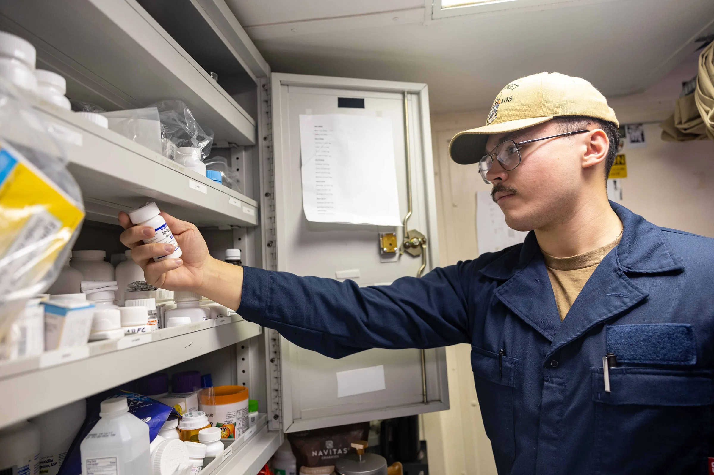

This guide offers professional buyers crucial insights into sourcing Admedic injection supplies for spas, clinics, and resellers.
In the competitive landscape of medical supplies, sourcing the right products is crucial for clinics, spas, and resellers. When it comes to Admedic injection supplies, understanding the procurement process can significantly impact your business's efficiency and profitability. This guide aims to address common buyer challenges and provide actionable insights for professional buyers.
With the growing demand for high-quality injection supplies, knowing how to navigate the procurement landscape is essential. This guide will help you make informed decisions, ensuring you select the right Admedic distributor to meet your business needs.
Key Takeaways
- Understand the importance of sourcing from a reliable Admedic distributor for quality assurance.
- Evaluate product types and packaging options to meet your specific business requirements.
- Consider minimum order quantities (MOQ) and reorder planning to optimize inventory management.
- Communicate clearly with suppliers regarding shipping and documentation to avoid delays.
- Utilize a comprehensive checklist before requesting quotes to streamline the procurement process.
What this guide covers
- Understanding Admedic injection supplies
- Identifying relevant buyers
- Comparison criteria for sourcing
- Checklist for requesting quotes
- Logistics and documentation considerations
- MOQ and reorder planning strategies
What buyers should understand first

Admedic injection supplies encompass a range of products designed for aesthetic and medical applications. These supplies typically include syringes, needles, and other accessories necessary for safe and effective injections. For clinics, spas, and resellers, it is essential to understand the specifications and quality standards associated with these products. Buyers should focus on sourcing from reputable suppliers to ensure compliance with local regulations and to maintain high standards of patient care.
Understanding the different types of Admedic injection supplies is also crucial. For instance, syringes come in various sizes and types, including disposable and reusable options. Needles vary in gauge and length, which can affect the comfort and effectiveness of injections. By familiarizing yourself with these details, you can make better purchasing decisions that align with your operational needs.
Which buyers is this most relevant for?
This procurement guide is particularly relevant for a variety of buyers, including:
- Clinics: Medical professionals seeking reliable injection supplies for patient treatments.
- Spas: Aesthetic service providers looking to enhance their service offerings with quality products.
- Resellers: Businesses aiming to stock and distribute Admedic supplies to clinics and spas.
Each of these buyer types will have unique order planning needs, such as varying quantities and product specifications, which will influence their procurement strategies. For instance, clinics may prioritize quality and compliance, while spas might focus on aesthetics and branding. Resellers, on the other hand, will need to consider market demand and pricing strategies.
How to compare options before ordering
When evaluating different Admedic injection supplies, consider the following criteria:
- Product Type: Identify the specific injection supplies required for your services. Different applications may require different types of syringes and needles.
- Brand Reputation: Research the credibility of the Admedic brand and its distributors. Look for reviews and testimonials from other buyers.
- Packaging: Assess the packaging options available to ensure they meet your storage and usage needs. Consider whether bulk packaging or individual units are more suitable for your operations.
- Batch and Expiry Visibility: Ensure that suppliers provide clear information on product batches and expiration dates. This is crucial for maintaining compliance and safety standards.
- Supplier Communication: Evaluate how responsive and informative potential suppliers are during the inquiry process. Good communication can prevent misunderstandings and delays.
- Destination Requirements: Consider any specific shipping or handling requirements based on your location. Some suppliers may have restrictions on certain products.
Buyer checklist before requesting a quote

- Define the specific Admedic products needed.
- Determine the desired quantities and variants.
- Check local regulations regarding injection supplies.
- Prepare any necessary documentation for procurement.
- Clarify shipping preferences and destination details.
- Assess your budget and pricing expectations.
- Review supplier terms and conditions, including payment options.
Shipping, packing and documentation questions
Logistics play a critical role in the procurement of Admedic injection supplies. Buyers should consider the following questions:
- What are the shipping options available, and how do they affect delivery times?
- What packaging standards are followed to ensure product integrity during transit?
- What documentation is required for customs clearance and local compliance?
- How will the supplier communicate updates regarding shipping status?
- Are there any additional fees related to shipping or handling that I should be aware of?
MOQ, quotation and reorder planning
Understanding minimum order quantities (MOQ) is essential for effective procurement. Here are some tips for managing your orders:
- Assess your current inventory levels to determine appropriate order quantities. This will help you avoid stockouts or overstock situations.
- Consider the variety of products needed to cater to your clientele. Different services may require different types of supplies.
- Plan for reorder cycles based on usage rates and lead times. Establish a routine for reviewing stock levels to ensure timely reorders.
- Contact SOLA to confirm current availability and to obtain a wholesale quotation tailored to your needs. They can assist you in navigating the procurement process efficiently.
FAQ
What is the minimum order quantity for Admedic supplies?
The minimum order quantity varies by supplier and product type. It is essential to confirm this with your chosen Admedic distributor.
How can I ensure product quality when sourcing?
Research the reputation of the Admedic distributor and request product samples when possible to assess quality.
What documentation do I need for importing Admedic supplies?
Documentation requirements can vary by location, so check with local authorities and your supplier for specific needs.
How can I streamline my reorder process?
Maintain accurate inventory records and establish a regular review schedule to determine when to reorder supplies.
Can SOLA assist with sourcing Admedic products?
Yes, SOLA can provide support in sourcing Admedic products and help with wholesale quotations.
Contact SOLA for wholesale quotation via WhatsApp.
Planning a wholesale request?
Send product names, quantities and destination for a tailored discussion.
Contact SOLA on WhatsApp →General educational content for professional buyers. Not medical, legal, regulatory or import advice.
Image sources: HMHN Bunce Inventories Medical Supplies (8224952).jpg by U.S. Navy photo by Petty Officer 1st Class Ryre Arciaga (Public domain, 6000x4000 px); Balikatan 25- U S , Philippine forces construct multi-purpose warehouse, prepare medical supplies to local community (8962081).jpg by Lance Cpl. Roger Annoh (Public domain, 5663x3777 px).